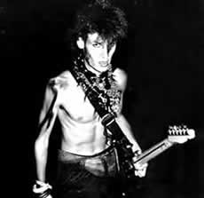
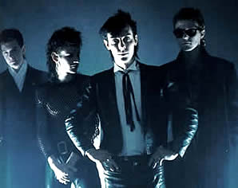

O surgimento da banda Bauhaus ocorreu em 1978,
na cidade de Northampton, Inglaterra. Os irmãos David Jay
(baixista e vocalista) e Kevin Haskins (baterista) criaram o The
Craze, que tinha uma proposta e uma sonoridade próxima
ao punk rock. Ao lado dos amigos Daniel Ash e Dave Exton, realizaram
a primeira apresentação na cidade. Mas a formação
definitiva viria apenas com a entrada de Peter Murphy; um amigo
de Daniel Ash que foi convidado para ser vocalista, mesmo sem
nunca ter cantado em nenhuma banda.
A
dupla Daniel Ash e Peter Murphy deu início as composições.
Ao mesmo tempo, os convites e os primeiros shows na cidade incentivavam
os jovens que se apresentavam já com o nome S.R,
neste momento, com Chris Barber no lugar de David Haskins. Pouco
tempo depois, David voltou a ocupar seu lugar e Chris deixou a
banda. Então o nome também foi alterado para Bauhaus
1919. Esta era uma referência a Escola de Arquitetura
e Desenho Industrial da Alemanha inaugurada em 1919, e fechada
pelos nazistas em 1933. Logo depois, passaram a se chamar apenas
Bauhaus.
Ao completar um ano de vida, a banda entrou no
estúdio Small Wonder para gravar seu primeiro single, intitulado
Bela Lugosi's Dead. Uma referência a morte do ator
Bela Lugosi em 1956, que se tornou conhecido após sua interpretação
no filme Drácula, em 1931. A capa do single trazia o cartaz
publicitário do filme, e na contracapa foi colocada uma
cena de O Gabinete do Doutor Caligari, de 1919. Motivos
mais do que suficientes para que fossem rotulados como góticos.
Porém, Peter Murphy chegou a declarar: "Nós
nunca fomos góticos. Fizemos uma música de brincadeira,
uma ironia e um monte de idiotas no mundo começou a nos
chamar de góticos, nunca fomos, era uma ironia, uma única
música com o tema, achamos esses caras loucos, nós
nunca fomos e nunca seremos góticos. Além disso,
a faixa título deste single durava mais de nove minutos.
Uma verdadeira afronta as rádios".
Em 1980 a banda lançou três singles:
Dark Entries, Telegram Sam e Terror Couple
Kill Colonel, pela Axis Records. Em setembro fez a primeira
apresentação nos Estados Unidos. O primeiro álbum
não tardou. O disco In The Flat Field foi um marco
na carreira. Os temas diversificados das músicas incluíam
a crucificação de Cristo, como na faixa Stigmata
Martyr que conta com citações em latim.
No
ano de 1981 o Bauhaus mudou de gravadora. A Beggars Baquet contava
com uma estrutura de divulgação mais forte e a banda
lançou dois singles: Kick in the Eye e Passion
of Lover. Logo após o segundo álbum da carreira,
denominado Mask. Neste disco, a música de destaque
é Of Lillies and Remains, que tem uma atmosfera
surreal e mórbida. Neste momento ficou evidente o amadurecimento
musical dos rapazes ingleses. A popularidade era tanta que no
ano seguinte, foram convidados a compor a trilha sonora do filme
The Hunger (Fome de Viver), e atuaram ao lado de David
Bowie, Catherine Deneuve e Susan Sarandon. Seguem mais dois singles
que fortalecem a discografia: Searching for Satori e Spirit.
O primeiro disco ao vivo foi gravado em Londres
e se chamava Press the Eject and Give Me that Tape. O
single que trazia a faixa Ziggy Stardust, de David Bowie,
confirmou a ascensão que o Bauhaus conseguia a cada lançamento.
Ainda em 1982 foi lançado o disco The sky's gone out.
No início de 1983, foi realizada uma turnê
pela França, Grécia, Israel e Japão. Mais
dois singles foram lançados: Lagartja Nick e She's
in Parties. Alguns meses depois, o Bauhaus emplacou o álbum
Burning from the inside e o fim da banda foi anunciado.
Kevin, David e Daniel Ash prosseguiram com outra banda chamada
The Love & Rockets. O vocalista Peter Murphy seguiu
carreira solo. Logo após, a gravadora lançou uma
coletânea intitulada Bauhaus The Singles 1981-1983.
Em 1997 os
ex-integrantes se reuniram e emplacaram o disco Live in Studio,
para comemorar os vinte anos de Bauhaus. No ano seguinte foi realizada
a turnê Ressurrection Tour, que rendeu o disco
Crackle. No mesmo ano ainda surgiu mais uma coletânea
chamada Gotham. Entre singles e álbuns, a discografia
do Bauhaus contém mais de vinte trabalhos. Porém,
os cinco discos lançados quando a banda ainda estava ativa,
somados aos três lançados em seu breve retorno nos
anos 90, compõem a base da carreira do Bauhaus.
Por
Spectrum
Downloads
Disponíveis: